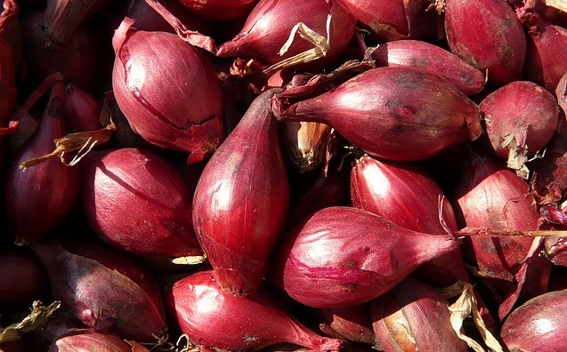
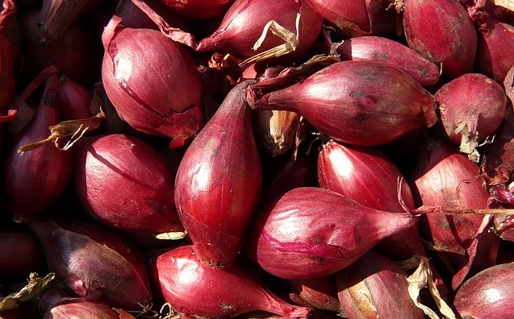

All About Allium
Consider this site an unrequested public service advisory for the proper use of the members of the edible Allium family. Perhaps you thought before that some of those plants were the same thing? Think again! Perhaps you do not think you need to know the difference between chives and scallions as a casual, amateur cook. Of course you do! Perhaps you do not use enough Allium plants in your cooking to care about this? Time to rethink that!


 

Did you know?
Leeks, chives, and other cultivated garlics are all part of the genus Allium. Although they share many similarities, there are some striking differences in the purpose and qualities of each species. For example, ornamental leeks are not quite as flavorful or large as their culinary counterparts, although they display brilliant white and purple flowers yearly. In the same way, misusing leeks, chives, scallions, and shallots (some of the more common culinary Allium) can prove to be a pain for the taste buds.
Disclaimer: Not all information included on this site is thoroughly researched from reputable sources. Use this website to make life decisions at your own risk. I hold no responsibility if my culinary advice is painfully incorrect.